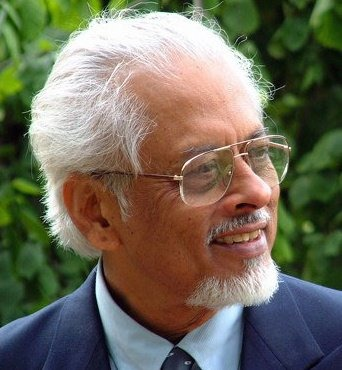

Parthasarathy (Partha) Ghose
Exploring Science, Mind and Reality
Theoretical Physicist · Historian and Philosopher of Science · Educator · Science Communicator
From fundamental physics and quantum mechanics to cognition, consciousness, music and theatre: more than six decades of inquiry.
Explore the researchMusic & Theatre
Welcome
A life in science, philosophy and the arts
Trained under National Professor Satyendra Nath Bose, Partha Ghose has contributed to particle physics, quantum field theory, the foundations of quantum mechanics, classical entanglement, quantum cognition, neural dynamics and the philosophy of science.
He is also a science communicator, a teacher, and a lifelong participant in Tagore's music and in English-language theatre. This site brings those strands together.
Read the full biography
Explore
Six ways in
Research
Quantum foundations, stochastic mechanics, quantum cognition and the philosophy of science.
02Publications
A searchable bibliography from 1966 to 2026.
03Books
Monographs, edited volumes, popular science and Bengali fiction.
04Lectures & Teaching
IIT Mandi courses, keynotes and invited talks.
05Science Communication
Television, essays, reviews and a weekly science page.
06Music, Theatre & Arts
Tagore in Symphony, My Fair Lady, The Sound of Music, South Pacific.
Selected work
Recent publications
- The FitzHugh–Nagumo Equations and Quantum Noise
P. Ghose and D. A. Pinotsis, Computational and Structural Biotechnology Journal 30 (2025) - Quantum Monodromy in a Cosmological Minisuperspace
I. Ghorai, H. Soni, A. Chakraborty and P. Ghose, Physica Scripta 101 (2026) - An Interdisciplinary Approach to Cognitive Modelling
P. Ghose and S. Patra, Routledge (2023) - Testing Quantum Mechanics on New Ground
Cambridge University Press (1999)
Recent activity
At IIT Mandi
- June 2026: Keynote Address, Mind–Brain–Consciousness Conference, IIT Mandi
- 2026: Bhuture Beral, a Bengali science fiction novel (Ananda Publishers)
- 2025–present: Fourteen-lecture postgraduate course on Quantum Cognition
- 2025–present: History and Philosophy of Science and Technology for first-year B.Tech. students
Featured recording
Tradition and Creativity in Tagore Songs
A recording with research and commentary by Partha Ghose on the relationship between tradition and creativity in Rabindrasangeet.
Music, theatre & the arts